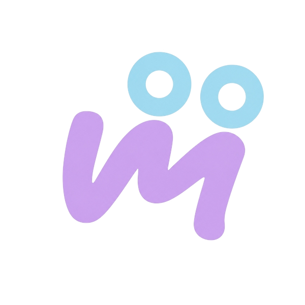

Martina
MR
MB
Centro de acompañamiento
Martina
Apoyo moderado
12 años
Programar sesión
Historial (PDF)
90%
de asistencia
Historial de sesiones
Las sesiones de las series se agrupan en carpetas.
Sin cambios: se mantiene como está hoy
Reportes de Martina
5 reportes · último el 28 sep
Reporte de seguimiento
Sin enviar
Generado el 28 sep · manual
Leer y enviar
Reporte de seguimiento
Enviado el 21 sep
Generado el 21 sep · automático
Leer
Reporte de seguimiento
Enviado el 1 sep
Generado el 31 ago · manual
Leer
Nuevo reporte para Martina
Ver los 5 reportes
Inicio
Agenda

Pacientes
Chats
Nuevo reporte
Paciente
MB
Martina
Sesiones para incluir
Solo aparecen las sesiones que tienen nota.
Sesión profesional
lun 28 sep · 16:00
Con nota
Sesión profesional
lun 21 sep · 16:00
Con nota
Terapia de anticipación
lun 14 sep · 16:00
Con nota
Generar reporte · 2 sesiones